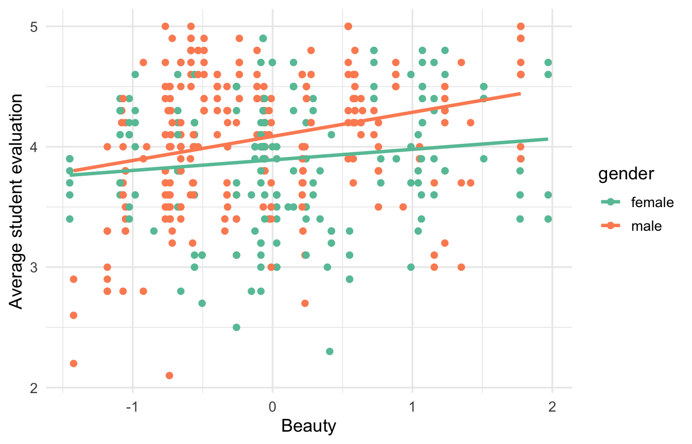
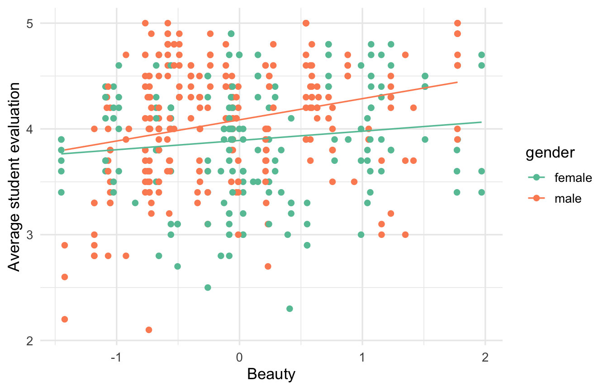
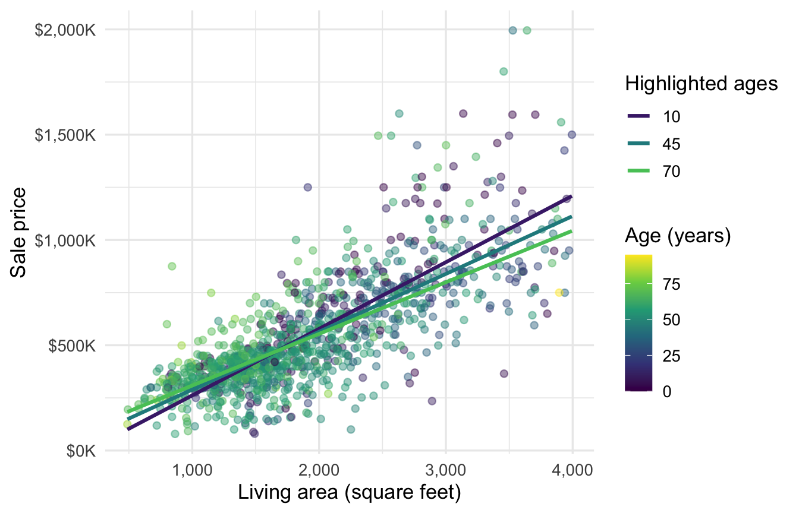

23 Interactions
In Section 22.2, we predicted course evaluations from an instructor’s beauty rating and recorded gender. That model fit gave us the two fitted lines in Figure 23.1. They are parallel because of the particular linear model we wrote down:
\[ \widehat{Y}=\widehat{\beta}_0+\widehat{\beta}_1(\text{male})+\widehat{\beta}_2(\text{beauty}). \]
Our calculations in the last chapter showed that whatever the estimated coefficients are, this model will produce two parallel lines predicting evaluations from beauty — the effect of beauty on predicted evaluations when comparing two instructors of the same gender is the same whether we’re looking at two male or two female instructors.
What do we get if we fit the beauty-evaluation line separately within each gender? Figure 23.2 allows each group to have its own intercept and slope. The two lines clearly have different slopes.

We should have two questions in mind: (1) Do the two slopes really differ, or is this sampling variation? (2) If they do differ, how can we expand our model to estimate that difference directly (instead of separate lines for each gender)? Answering (2) will answer (1) along the way. We need to introduce an interaction term to allow the beauty slope to depend on gender.
NoteDefinition: Interaction
An interaction is a term in the regression model that allows the coefficient on one predictor to depend on the value of another predictor. If the coefficient on \(X_1\) depends on \(X_2\), then the coefficient on \(X_2\) also depends on \(X_1\).
23.1 A categorical and a quantitative predictor
The interaction model adds the product of the beauty score and the male dummy:
\[ \widehat{Y}=\widehat{\beta}_0+\widehat{\beta}_1(\text{male})+\widehat{\beta}_2(\text{beauty})+\widehat{\beta}_3(\text{male})(\text{beauty}). \]
The fitted coefficients are in the table below.
| Estimate | Std. error | 95% CI | t | p-value | |
|---|---|---|---|---|---|
| Intercept (female, beauty = 0) | 3.89 | 0.04 | [3.81, 3.97] | 100.34 | <0.001 |
| Male vs. female (beauty = 0) | 0.20 | 0.05 | [0.10, 0.30] | 3.83 | <0.001 |
| Beauty rating (female) | 0.09 | 0.05 | [0.00, 0.18] | 1.86 | 0.063 |
| Beauty rating x male | 0.11 | 0.06 | [−0.01, 0.24] | 1.76 | 0.079 |
| Residual standard error | 0.54 | ||||
| R² / Adjusted R² | 0.073 / 0.066 | ||||
| n | 463 |
Let’s see how this model generates different slopes by plugging in an instructor of each type and rearranging the equations. For female instructors, male = 0, so the model becomes
\[ \widehat{Y}_{\text{female}} =\widehat{\beta}_0+\widehat{\beta}_2(\text{beauty}). \]
The female line has intercept \(\widehat{\beta}_0\) and beauty slope \(\widehat{\beta}_2\). With the estimated coefficients we get \[ \widehat{Y}_{\text{female}}=3.89+0.09(\text{beauty}) \]
For male instructors, male = 1, so the model becomes
\[ \widehat{Y}_{\text{male}} =(\widehat{\beta}_0+\widehat{\beta}_1) +(\widehat{\beta}_2+\widehat{\beta}_3)(\text{beauty}). \]
Plugging the estimates in again,
\[ \widehat{Y}_{\text{male}}=4.09+0.20(\text{beauty}). \]
These fitted lines match the two separate within-gender regressions from the introduction — we’re able to reproduce the separate-sample fits using a single regression fit to the entire dataset. This is particularly useful when we want to adjust for other variables like age (which would make the two simple regressions above two multiple regressions that include age).

23.2 Interpreting the coefficients
The interpretations of the coefficients are implicit in the equations above:
The intercept, \(\widehat{\beta}_0=3.89\), is the predicted evaluation for a female instructor with average beauty (beauty = 0).
The gender main effect, \(\widehat{\beta}_1=0.20\), is the predicted male-minus-female difference for an average-looking instructor. To see that, plug in
male = 1andbeauty = 0to get \(\widehat{Y}_{\text{male}}-\widehat{Y}_{\text{female}}=\widehat{\beta}_1\).The beauty main effect, \(\widehat{\beta}_2=0.09\), is the predicted evaluation difference per beauty point among female instructors. We can read that off the line for female instructors we obtained above.
The interaction coefficient, \(\widehat{\beta}_3=0.11\), is the male beauty slope minus the female beauty slope. The two slopes differ by 0.11 evaluation points per beauty point in this sample.
The main effects have nice, clean interpretations here because the beauty score is mean-centered. It’s usually a good idea to mean center quantitative predictors when they appear in an interaction. Mean-centering does not change the fitted values or quality of fit. It changes the lower-order coefficient estimates and their interpretations.
The final bullet answers our first question from the introduction: Could the apparent slope difference be sampling variation? The 95% confidence interval for the interaction coefficient runs from -0.01 to 0.24 evaluation points per beauty point. A difference of zero between the two population slopes remains plausible. The fitted sample slopes differ, but the data do not give us strong evidence that the population slopes do.
23.2.1 Main effects and hierarchy
A model that contains \(X_1X_2\) should also retain the main effects \(X_1\) and \(X_2\) in general. Omitting one of the main effects makes a strong assumption. In this particular case:
- Omitting the main effect for gender would force the model to predict that male and female instructors with average beauty have the same predicted evaluation. In Table 23.1, the 95% confidence interval for this main effect runs from 0.10 to 0.30. Zero is not plausible under this model, so the data do not support that restriction.
- Omitting the main effect for beauty would force the model to conclude that the beauty slope is zero for female instructors. Its 95% confidence interval runs from -0.005 to 0.180, so zero remains plausible. Even so, dropping the main effect would impose a zero slope on the female reference group while allowing a slope for male instructors through the interaction term alone.
In the general case, main effects in an interaction model describe the effect of one predictor when the other predictor equals zero. While there may be very specific contexts when it makes sense to assume these away, they are few and far between.
23.3 Two quantitative predictors
We’ve seen the living area of a house emerge as a strong single predictor of sale price. Does its effect on predicted price change as a function of the other variables? Let’s look at age, a home’s age in years. It seems possible that an additional square foot might be worth more for a newer home than an older one. We can assess that with an interaction term:
\[ \widehat{\text{price}} =\widehat{\beta}_0+\widehat{\beta}_1(\text{area}) +\widehat{\beta}_2(\text{age}) +\widehat{\beta}_3(\text{area})(\text{age}). \]
For these Austin homes, the fitted equation is
\[ \widehat{\text{price}} =-\$74,104 +\$328.11(\text{area}) +\$1,969(\text{age}) -\$1.1853(\text{area})(\text{age}). \]
How do we interpret the coefficients?
- The intercept, \(-\$74,104\), is the predicted price of a brand-new, zero-square-foot home. That is not a useful number on its own.
- The age main effect, \(\$1,969\), is the predicted price difference per additional year for a zero-square-foot home. Again, not useful on its own.
- The area main effect, \(\$328.11\), is the predicted price difference per additional square foot for a brand-new home. Unlike the age main effect, this is a meaningful number.
- The interaction coefficient is -$1.1853 per square-foot-year. Each additional year of age increases the effect of an additional square foot by -$1.1853 per square foot. That’s a mouthful, but it’s the same idea as before: The effect of area depends on how old the house is, and that dependence is driven by \(\hat\beta_3\). We have:
\[ \widehat{\text{price}} =\left(\widehat{\beta}_0+\widehat{\beta}_2\,\text{age}\right) +\left(\widehat{\beta}_1+\widehat{\beta}_3\,\text{age}\right)\text{area}. \]
Looking at that age-dependent slope above, we can see it falls from about $316 per square foot for a 10-year-old home to $275 at age 45 and $245 at age 70.
Figure 23.4 plots all homes using a continuous age scale and highlights the fitted lines at those three ages. The lines flatten as age increases according to the equation above. We could also re-write the model in terms of an area-specific slope determining the effect of age.

Finally, mean-centering area would produce an identical fit with more useful interpretations of the intercept and age main effect, just as the mean-centered beauty score did above. The area main effect already describes brand-new homes, so age = 0 is a meaningful reference point. If we wanted to interpret the area main effect at the mean age instead, we would center age too.
23.4 Using interactions
Interactions make a model more complex to analyze and explain, so include one when the dependence of a coefficient on another predictor is substantively relevant or produces better predictions.
We don’t need interactions just because two predictors are correlated, or because we want to estimate the coefficient on one predictor while adjusting for the other. An additive model already gives like-to-like comparisons. We need an interaction when the coefficient on one predictor changes with another predictor.
Interactions also apply to two categorical predictors. We can represent a full interaction by creating one larger categorical variable whose categories are all observed combinations of the original two variables. Unless we’re particularly interested in testing certain group differences, we might as well just make the combined categorical variable and fit a single regression model.